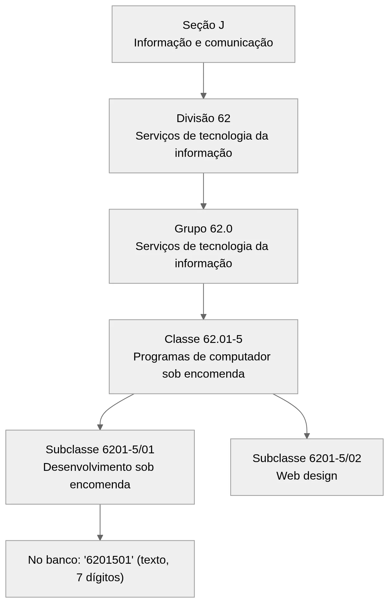

CNAE: O que É e Como Consultar o CNAE pelo CNPJ
Todo cadastro de pessoa jurídica carrega um código que diz o que aquela empresa faz: o CNAE. Ele separa a padaria da software house e o distribuidor do escritório de contabilidade. Para quem programa, o código responde a perguntas práticas. Esse fornecedor pode vender o que está vendendo? Esse lead é do meu segmento? Essa empresa pode ficar no Simples? Neste guia, você vai ver o que é CNAE, como o código é montado e como consultar o CNAE pelo CNPJ, na tela da Receita ou por API. Ao longo do texto há exemplos de código e, no fim, as armadilhas que mais quebram integração.
O que é CNAE e como o código é organizado
CNAE é a sigla de Classificação Nacional de Atividades Econômicas. Trata-se da tabela oficial que dá um código a cada tipo de atividade produtiva no Brasil. Quem mantém a classificação é o IBGE (Instituto Brasileiro de Geografia e Estatística), órgão gestor, em conjunto com a Concla (Comissão Nacional de Classificação).
Existem duas camadas da mesma tabela. A CNAE 2.0 é a versão estatística, usada em pesquisas do IBGE, e vai só até o código de 5 dígitos, chamado classe. Já a CNAE-Subclasses acrescenta mais dois dígitos, chegando a 7, e serve aos cadastros da administração pública. É ela que aparece no CNPJ, nas inscrições estaduais e nos cadastros municipais. A versão atual das subclasses é a 2.3, em vigor desde 1º de janeiro de 2019.
Os cinco níveis da hierarquia
A CNAE funciona como uma árvore. Cada nível detalha o anterior, e só o último identifica a atividade com precisão suficiente para um cadastro. A tabela abaixo usa um exemplo que todo dev reconhece, o desenvolvimento de software sob encomenda. Os totais vêm da API de CNAE do IBGE, consultada em outubro de 2026.
| Nível | Formato | Exemplo | Descrição oficial | Total na tabela |
|---|---|---|---|---|
| Seção | 1 letra | J | Informação e comunicação | 21 |
| Divisão | 2 dígitos | 62 | Atividades dos serviços de tecnologia da informação | 87 |
| Grupo | 3 dígitos | 62.0 | Atividades dos serviços de tecnologia da informação | 285 |
| Classe | 5 dígitos | 62.01-5 | Desenvolvimento de programas de computador sob encomenda | 673 |
| Subclasse | 7 dígitos | 6201-5/01 | Desenvolvimento de programas de computador sob encomenda | 1.332 |
Repare que a letra da seção não entra no número. O código que o cadastro usa tem sete dígitos. O hífen e a barra do formato 0000-0/00 (a chamada máscara) servem só para facilitar a leitura na tela: no banco, 6201-5/01 é guardado como 6201501. A classe 62.01-5 tem duas subclasses. Uma é a 6201-5/01, sob encomenda; a outra é a 6201-5/02, de web design. Por isso, guardar só os cinco dígitos da classe faz perder informação. E a descrição da divisão 62 se repete no grupo 62.0 porque essa divisão tem um grupo só.

CNAE principal e CNAEs secundários
Na relação entre CNAE e CNPJ, cada estabelecimento (matriz ou filial, cada um com seu CNPJ) tem exatamente um CNAE principal e pode ter vários secundários. Em regra, o principal é a atividade que gera a maior receita. Os secundários cobrem o resto: a software house que também dá treinamento, por exemplo, pode ter 8599-6/04 (treinamento em desenvolvimento profissional e gerencial) como atividade secundária.
No comprovante de inscrição do CNPJ, o chamado cartão CNPJ, as duas informações aparecem em campos separados. Um traz o código e a descrição da atividade econômica principal. O outro lista as atividades secundárias, uma por linha. Quando não há secundárias, o campo aparece como não informado. Essa separação importa no sistema. Para segmentar um lead por setor, o principal costuma bastar. Já para saber se a empresa pode ficar no Simples, é preciso olhar também as secundárias: uma atividade impeditiva na lista já trava o regime.
Como consultar o CNAE pelo CNPJ e entender o código
Há dois caminhos para descobrir o CNAE pelo CNPJ. Para consultar uma empresa de vez em quando, a tela da Receita resolve. Para centenas de CNPJs ou para uma checagem dentro de um fluxo, você precisa de uma API.
Pelo comprovante de inscrição no site da Receita
A Receita Federal mantém a emissão do Comprovante de Inscrição e de Situação Cadastral. O passo a passo é curto:
- digite o CNPJ, com ou sem pontuação;
- resolva o captcha;
- leia, no comprovante, os campos das atividades econômicas principal e secundárias.
O documento também mostra razão social, natureza jurídica, endereço e situação cadastral. É o jeito oficial de consultar o CNAE pelo CNPJ quando alguém precisa ver com os próprios olhos.
O limite aparece quando o volume cresce. O captcha existe para barrar automação, a página devolve HTML pensado para leitura humana e cada consulta exige uma pessoa na frente da tela. Um robô que lê essa página automaticamente (o chamado scraping) quebra na primeira mudança de layout e pode levar ao bloqueio do seu IP.
Pela API, para consulta CNPJ CNAE em lote
Uma boa API de CNPJ consulta os dados da Receita e devolve a resposta num formato que o sistema lê direto, JSON ou XML. Assim, a consulta CNPJ CNAE entra na mesma rotina automática que importa a planilha de leads ou aprova o fornecedor. O artigo sobre API de consulta de CNPJ explica autenticação, limites e tratamento de erro em detalhe.
Antes de gastar uma chamada, valide o número. Desde julho de 2026, a Receita passou a emitir CNPJs com letras nas 12 primeiras posições. O post sobre o CNPJ alfanumérico mostra o que muda no seu código. Já o guia de como validar um CNPJ traz o algoritmo dos dígitos verificadores.
Na prática, o retorno de uma API traz o CNAE da empresa em dois blocos: o principal, com código e descrição, e uma lista de secundários. Os nomes dos campos variam de fornecedor para fornecedor. Os exemplos abaixo usam nomes ilustrativos; confira os reais no painel antes de codificar.
import re
import requests
URL_DA_API = "https://URL_DA_API/cnpj" # confira no painel do Hub
TOKEN = "SEU_TOKEN"
def so_codigo(cnae):
"""'6201-5/01' -> '6201501', preservando zeros à esquerda."""
if not isinstance(cnae, (str, int)):
raise ValueError(f"CNAE em formato inesperado: {cnae!r}")
codigo = re.sub(r"\D", "", str(cnae)).zfill(7)
if not re.fullmatch(r"\d{7}", codigo):
raise ValueError(f"CNAE inválido: {cnae!r}")
return codigo
def cnae_pelo_cnpj(cnpj):
resp = requests.get(URL_DA_API, params={"cnpj": cnpj, "token": TOKEN},
timeout=15)
resp.raise_for_status()
dados = resp.json()
principal = so_codigo(dados["atividade_principal"]["codigo"])
secundarias = [so_codigo(a["codigo"])
for a in dados.get("atividades_secundarias") or []]
return principal, secundarias
A função devolve os códigos já limpos, prontos para comparar com a sua tabela. O zfill(7) repõe o zero inicial que alguns códigos perdem ao passar por planilha ou campo numérico: o cultivo de arroz, 0111-3/01, às vezes chega como 111301. A função também recusa número decimal e valor vazio, que gerariam um código errado sem aviso.
Se você precisa descobrir o CNAE pelo CNPJ de muitas empresas, a API de CNPJ do Hub do Desenvolvedor consulta os dados direto na Receita, sem captcha. Ela devolve as atividades econômicas principal e secundárias junto com razão social, situação cadastral e endereço. Dá para testar grátis por três dias com os CNPJs da sua base.
Qual caminho usar em cada caso
O portal serve para conferência manual e auditoria pontual, quando alguém quer ver o CNAE pelo CNPJ de uma empresa específica. A API serve para tudo o que roda sem ninguém olhando: importação, enriquecimento de cadastro, revalidação periódica. A regra simples é esta: se a consulta do CNAE pelo CNPJ acontece dentro de um fluxo automático, ela não deve depender de captcha.
Como descobrir o significado de um código CNAE
Consultar o CNAE pelo CNPJ devolve um código e, quase sempre, uma descrição curta. Muitas vezes isso não basta. Você precisa saber o que a atividade inclui e o que ela exclui, ou montar a sua própria tabela de descrições.
O IBGE mantém um sistema de pesquisa da CNAE, o site cnae.ibge.gov.br. Lá, você busca por código ou por palavra e navega pela estrutura. Cada classe tem notas explicativas: o que ela compreende e o que ela não compreende. Para a 62.01-5, por exemplo, a nota separa dois casos. O software feito sob medida para um cliente fica nela. Já o desenvolvimento e licenciamento de programas customizáveis, como um sistema pronto que a empresa adapta para cada cliente, vai para a 62.02-3. Esse tipo de detalhe resolve a dúvida "qual CNAE usar" melhor que qualquer resumo.
A API CNAE pública do IBGE
Para ter a descrição de todos os códigos dentro do seu sistema, sem depender do texto curto que vem em cada consulta de CNPJ, o IBGE oferece uma API gratuita e sem autenticação em servicodados.ibge.gov.br, na versão 2. Estes são os recursos mais úteis:
/api/v2/cnae/subclassesdevolve as 1.332 subclasses de uma vez;/api/v2/cnae/subclasses/6201501devolve uma subclasse pelo código de 7 dígitos, sem máscara;/api/v2/cnae/classes/62015devolve uma classe pelo código de 5 dígitos;/api/v2/cnae/classes/62015/subclasseslista as subclasses de uma classe;/api/v2/cnae/secoes,/divisoese/gruposdevolvem os níveis superiores.
Cada subclasse vem com o id, a descrição, a classe aninhada (com grupo, divisão e seção dentro dela), as notas explicativas e uma lista de atividades. Essa lista ajuda muito na busca, porque traz termos como "desenvolvimento de aplicativo informático sob encomenda", que o usuário digita e a descrição oficial não usa.
Atenção: um código inexistente, como
/api/v2/cnae/subclasses/9999999, responde HTTP 200 com uma lista vazia, e não 404. Testar só o status da resposta faz o seu sistema aceitar um CNAE fantasma. A API de municípios do IBGE tem o mesmo comportamento, como mostra o post sobre o código IBGE de município.
O exemplo em JavaScript abaixo, com o fetch nativo do Node.js 18 ou superior, carrega a tabela inteira e monta um índice por código:
const URL_CNAE = 'https://servicodados.ibge.gov.br/api/v2/cnae/subclasses';
async function carregarCnae() {
const resp = await fetch(URL_CNAE);
if (!resp.ok) throw new Error(`IBGE respondeu ${resp.status}`);
const lista = await resp.json();
if (!Array.isArray(lista) || lista.length < 1000) {
throw new Error('Tabela CNAE incompleta; mantendo a versão anterior');
}
const porCodigo = new Map();
for (const s of lista) {
porCodigo.set(s.id, {
descricao: s.descricao,
classe: s.classe.id,
secao: s.classe.grupo.divisao.secao.id,
});
}
return porCodigo;
}
carregarCnae().then((mapa) => {
console.log(mapa.size); // 1332 em outubro de 2026
console.log(mapa.get('6201501')); // { descricao: 'DESENVOLVIMENTO DE...', classe: '62015', secao: 'J' }
});
A checagem do tamanho da lista protege a rotina de atualização. Se a API devolver vazio num dia ruim, você mantém a tabela antiga em vez de apagar tudo.
Para que serve o CNAE da empresa dentro do sistema
Consultar o CNAE pelo CNPJ compensa quando o código alimenta alguma regra do sistema. Os usos abaixo são os que mais aparecem em produto e backoffice.
Segmentação de leads e da carteira
Times comerciais segmentam por setor, e o CNAE é o setor oficial, sem digitação livre. Com a divisão de dois dígitos, você agrupa toda a tecnologia da informação (62) ou todo o varejo (47). Com a subclasse, você chega ao nicho exato. O ganho aparece no relatório: "clientes do setor 62 convertem duas vezes mais" é uma frase que o CRM só consegue produzir se o código estiver gravado.
Validação de fornecedor
No cadastro de fornecedor, consultar o CNAE pelo CNPJ faz parte da checagem básica antes de contratar. O CNAE da empresa ajuda a responder se a atividade combina com o que ela vende. Uma empresa cujos CNAEs, principal e secundários, são todos de comércio de vestuário merece revisão se fatura serviço de manutenção de servidores. Não é prova de fraude, mas é um sinal que a área de conformidade (compliance) quer ver antes do primeiro pagamento.
Simples Nacional: atividades impeditivas, anexos e Fator R
O CNAE pesa no enquadramento tributário. A Resolução CGSN 140/2018, que regulamenta o Simples Nacional, tem dois anexos que interessam ao sistema:
- Anexo VI: os CNAEs que impedem a empresa de optar pelo Simples Nacional;
- Anexo VII: os CNAEs ambíguos, que cobrem ao mesmo tempo uma atividade proibida e uma permitida. Aqui o sistema não decide sozinho e precisa de revisão humana.
Não confunda com os Anexos I a V da Lei Complementar 123/2006. Esses são as tabelas de alíquota do Simples, e o CNAE ajuda a indicar em qual delas a receita cai.
Para algumas atividades de serviço, só o CNAE não decide. O art. 18 da LC 123 cria o chamado Fator R: se a folha de salários dos 12 meses anteriores for igual ou superior a 28% da receita bruta, a atividade sai do Anexo V e vai para o Anexo III, de alíquota menor. Uma consultoria que faturou R$ 1 milhão em 12 meses e pagou R$ 300 mil de folha tem Fator R de 30% e fica no Anexo III; com R$ 200 mil de folha, o fator cai para 20% e ela vai para o Anexo V. Portanto, o sistema precisa do CNAE e também de dados de folha e receita. A situação de opção pelo regime, por sua vez, vem de outra consulta, explicada no post sobre consulta Simples Nacional por API.
MEI: ocupações permitidas
O MEI (microempreendedor individual) só pode exercer as ocupações listadas no Anexo XI da mesma resolução, e cada ocupação aponta para uma subclasse CNAE. O Portal do Empreendedor publica a lista de ocupações permitidas ao MEI. Para quem contrata MEI, cruzar o CNAE pelo CNPJ com essa lista mostra se o MEI pode, legalmente, prestar o serviço que você está contratando.
Regras fiscais e KYC
Em ERPs, o CNAE do cliente ajuda a sugerir o que vai na nota: a natureza da operação (venda, revenda, remessa) e o CFOP (Código Fiscal de Operações e Prestações). Também ajuda a separar quem compra para revender de quem compra para uso próprio, o que muda a tributação da venda. A palavra final é do contador; o código só dá a primeira pista.
Em KYC (Know Your Customer, a verificação de quem é o cliente), o CNAE entra na análise de risco. Fintechs e meios de pagamento costumam tratar com mais cuidado atividades como câmbio, comércio de metais preciosos e venda de veículos usados, e a regra só funciona se o código vier da fonte oficial, não do formulário.
A tabela resume onde cada área do sistema usa o CNAE e qual nível do código costuma bastar.
| Área do sistema | Uso do CNAE | Nível que costuma bastar | Olha as secundárias? |
|---|---|---|---|
| CRM e marketing | segmentar leads e carteira por setor | divisão (2 dígitos) | às vezes |
| Compras e compliance | conferir se a atividade combina com o que o fornecedor vende | subclasse (7 dígitos) | sim |
| Fiscal e tributário | checar CNAE impeditivo ou ambíguo e sinalizar o Fator R | subclasse (7 dígitos) | sim |
| Contratação de MEI | cruzar com as ocupações permitidas | subclasse (7 dígitos) | sim |
| ERP e emissão de nota | sugerir natureza da operação e CFOP | classe ou subclasse | às vezes |
| KYC e risco | classificar atividade de risco no onboarding | subclasse (7 dígitos) | sim |
Se algum desses fluxos depende de alguém copiar o CNAE do cartão CNPJ, automatize esse passo. A consulta de CNPJ do Hub do Desenvolvedor devolve o CNAE principal e os secundários em JSON ou XML, e o mesmo plano inclui consultas de CPF, CEP e frete, entre mais de 20 APIs.
Como modelar o CNAE no banco e evitar armadilhas
O CNAE parece um campo simples, mas uma modelagem ruim só dá sinal meses depois, quando um relatório não fecha. Três decisões de modelagem evitam a maior parte dos problemas, e uma lista de armadilhas fecha o assunto.
Guarde o código como texto, sem máscara
Quem importa o CNAE pelo CNPJ de uma API recebe às vezes o código com máscara, às vezes sem. Use CHAR(7) ou VARCHAR(7), nunca inteiro. Pela contagem na API do IBGE, 167 das 1.332 subclasses começam com zero, todas da agropecuária e das indústrias extrativas. O cultivo de arroz, 0111-3/01, vira 111301 numa coluna numérica. A máscara fica para a tela. No banco, o código vai limpo.
Secundárias numa tabela 1:N
Não guarde as secundárias numa string separada por vírgula. Cada empresa tem um principal e N secundários, e a modelagem natural é uma tabela de vínculo:
CREATE TABLE cnae (
codigo CHAR(7) PRIMARY KEY, -- '6201501', sem máscara
descricao TEXT NOT NULL,
classe CHAR(5) NOT NULL, -- '62015'
secao CHAR(1) NOT NULL, -- 'J'
versao VARCHAR(10) NOT NULL, -- '2.3'
atualizado_em TIMESTAMP NOT NULL
);
CREATE TABLE empresa_cnae (
cnpj CHAR(14) NOT NULL, -- texto: o CNPJ pode ter letras
cnae CHAR(7) NOT NULL, -- sem FK: aceita código fora da tabela
cnae_valido BOOLEAN NOT NULL, -- false = código ausente da tabela cnae
versao_cnae VARCHAR(10) NOT NULL, -- versão vigente na consulta
principal BOOLEAN NOT NULL,
consultado_em TIMESTAMP NOT NULL,
PRIMARY KEY (cnpj, cnae)
);
-- empresas com qualquer atividade na divisão 62
SELECT DISTINCT cnpj FROM empresa_cnae WHERE cnae LIKE '62%';
-- um único CNAE principal por CNPJ (PostgreSQL e SQLite)
CREATE UNIQUE INDEX um_principal_por_cnpj ON empresa_cnae (cnpj) WHERE principal;
Com isso, a pergunta "quem tem atividade de TI, principal ou secundária?" vira uma consulta simples. O índice parcial do fim garante um único principal por CNPJ no PostgreSQL e no SQLite; no MySQL, que não tem esse recurso, valide na aplicação.
Versão da tabela e cache da descrição
Grave a versão da CNAE junto com a tabela de referência. A CNAE-Subclasses já passou por várias versões, e a cada troca houve subclasses incluídas, excluídas e renomeadas. Com a coluna versao_cnae no vínculo, quando a próxima versão sair você saberá quais registros nasceram com a tabela antiga.
A descrição deve vir da sua tabela cnae, atualizada por rotina agendada, e não ser copiada para cada empresa. Assim, uma mudança de nome atualiza tudo de uma vez. Se o código vindo do CNPJ não existir na sua tabela, grave o vínculo com cnae_valido = false e mande para revisão em vez de descartá-lo. Por isso o exemplo não usa chave estrangeira: ela faria o banco recusar o registro.
Na prática: atualize a tabela de referência do IBGE uma vez por mês, porque a carga completa custa uma única chamada. Já o CNAE pelo CNPJ das empresas ativas custa uma chamada por empresa: reconsulte numa frequência que faça sentido para o negócio, como a cada trimestre.
Armadilhas comuns
Algumas falhas se repetem em quase toda integração:
- CNAE desatualizado no cadastro: a empresa muda de atividade e o seu sistema guarda o código do dia do cadastro. Grave a data da consulta e revalide.
- Mudança de CNAE por alteração contratual: a troca é registrada na Junta Comercial (ou no cartório, na sociedade simples) e pode levar alguns dias para aparecer no CNPJ. Nesse intervalo, o cartão pode ainda mostrar a atividade antiga; aceite o contrato alterado como prova e reconsulte depois.
- Zeros à esquerda perdidos: planilhas e conversões para número apagam o zero inicial. O
zfill(7)do exemplo em Python resolve quando o valor chega como texto ou inteiro, mas o certo é nunca converter para número. - Código de 7 dígitos contra classe de 5: 6201501 nunca vai bater com 62015, e cortar o código em 5 dígitos junta subclasses diferentes, como a 6201-5/01 e a 6201-5/02. Decida o nível de cada regra e compare no mesmo nível.
- Olhar só o principal: regras de Simples, MEI e compliance quase sempre exigem varrer as secundárias também.
Perguntas frequentes sobre o CNAE pelo CNPJ
Como descobrir o CNAE de uma empresa pelo CNPJ?
Emita o Comprovante de Inscrição e de Situação Cadastral no site da Receita Federal, informando o CNPJ e resolvendo o captcha. O CNAE principal e os secundários aparecem em campos próprios. Para muitas empresas ou dentro de um sistema, use uma API de consulta de CNPJ.
O que é CNAE principal e CNAE secundário?
O CNAE principal é, em regra, a atividade que gera a maior receita da empresa, e cada CNPJ tem só um. Os secundários são as demais atividades exercidas e podem ser vários. Os dois aparecem no cartão CNPJ e no retorno das APIs de consulta.
Qual é a versão atual da CNAE usada no CNPJ?
Os cadastros públicos, incluindo o CNPJ, usam a CNAE-Subclasses. A versão atual é a 2.3, em vigor desde 1º de janeiro de 2019, com 1.332 subclasses de 7 dígitos.
Existe API gratuita para consultar o significado de um código CNAE?
Sim. O IBGE oferece uma API pública e sem autenticação em servicodados.ibge.gov.br. O endpoint /api/v2/cnae/subclasses/{código} devolve descrição, hierarquia, notas explicativas e atividades. Ela traduz o código, mas não informa o CNAE de uma empresa.
Como guardar o CNAE no banco de dados?
Como texto de 7 caracteres, sem máscara e sem converter para número, porque 167 subclasses começam com zero. Guarde as secundárias numa tabela separada, com um registro por atividade, e mantenha a descrição numa tabela de referência atualizada.
Resumo para levar ao código
Para usar o CNAE pelo CNPJ em produção: consulte por API, guarde o código limpo como texto, separe principal e secundárias numa tabela 1:N e mantenha a tabela do IBGE em cache com versão. Grave sempre a data da consulta. Essas regras evitam o relatório que não fecha e o fornecedor aprovado com atividade incompatível.
Com o CNAE gravado e atualizado, o sistema sabe de que setor é cada empresa, se a atividade pode travar o Simples e se o fornecedor vende algo compatível com o que faz. Para buscar esse dado sem captcha e em lote, crie sua conta e teste a API de consulta CNPJ com CNAE do Hub do Desenvolvedor. O teste grátis de três dias basta para rodar a sua base e comparar com o que está gravado hoje.